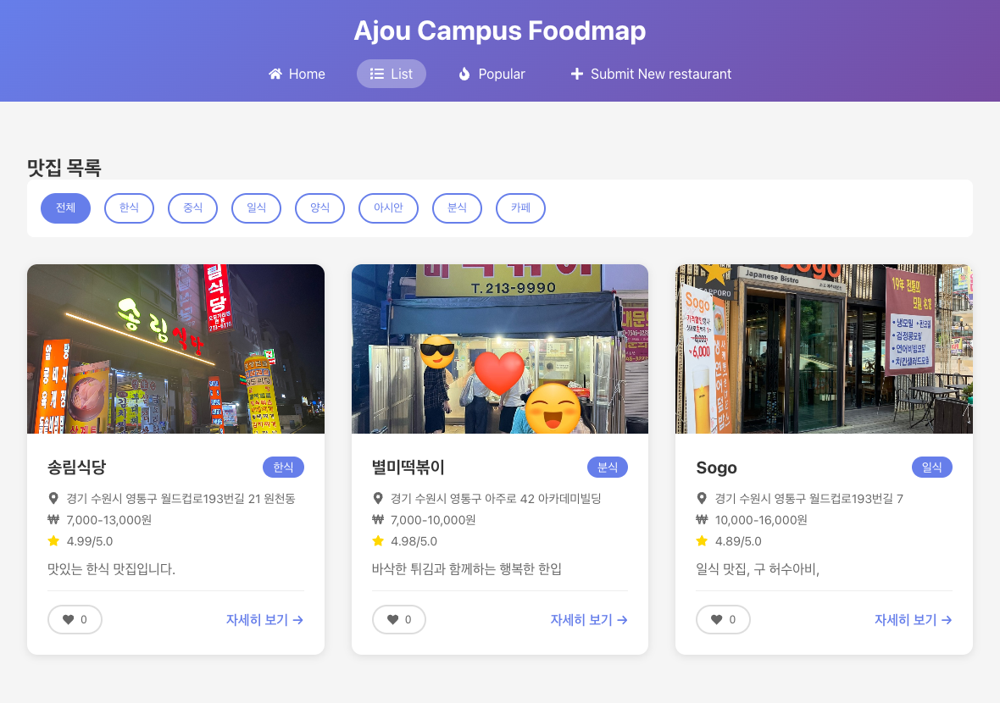
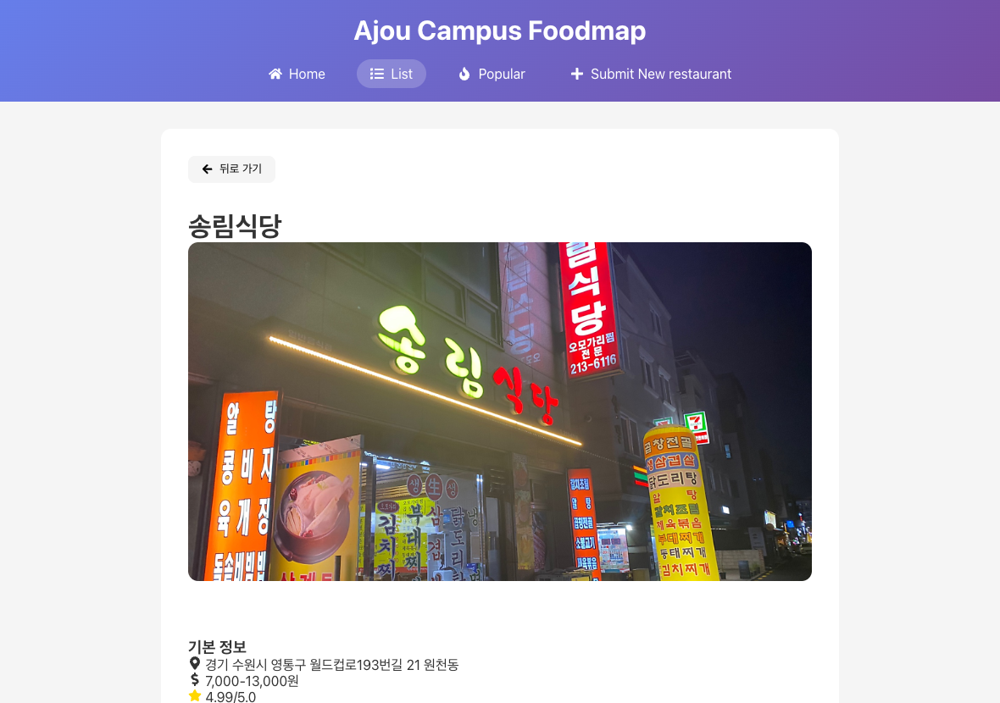
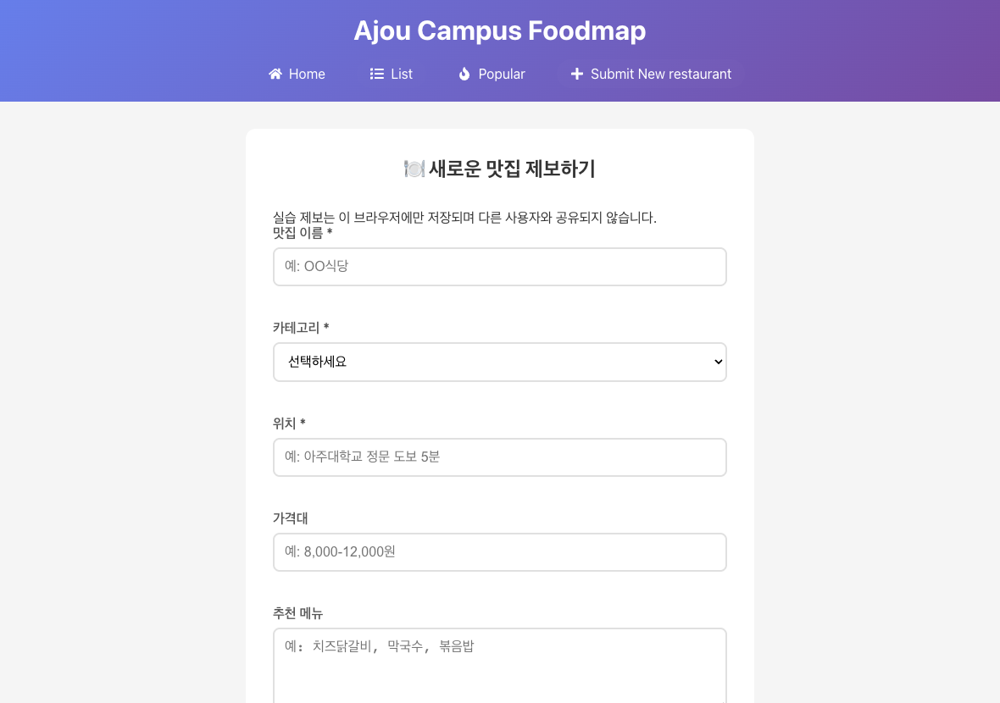

LECTURE 05 · 실전 웹 서비스 개발
React 심화 · 캠퍼스 푸드맵
4주차 복습 · 컴포넌트와 상태 · 맛집 앱 구현과 Vercel 배포
01 · 4주차 학습 내용 복습
React와 개발 도구의 역할
4주차의 Hello World 프로젝트를 구성한 도구와 실행 환경
| 구성 요소 | 역할 | 이번 실습의 사용 위치 |
|---|---|---|
| React | 컴포넌트와 상태로 UI 표현 | src/components/*.jsx |
| React DOM | React UI를 브라우저 DOM에 반영 | src/main.jsx |
| Vite | 개발 서버 · 소스 변환 · 배포 빌드 | vite.config.js |
| Node.js · npm | 개발 도구 실행 · 의존성 설치 | package.json · package-lock.json |
01 · 4주차 학습 내용 복습
컴포넌트와 선언형 UI
상품 목록에서 맛집 목록으로 이어지는 데이터 중심 화면 구성
- 컴포넌트 - 역할별 UI 단위
- 목록 · 카드 · 검색 조건의 분리
- 같은 카드에 서로 다른 맛집 데이터 전달
- 선언형 UI - 상태에 맞는 화면 정의
- 한식 선택 → 조건 변경 → 일치하는 카드 표시
개념 예제 · 선택 조건과 화면
const visible = restaurants.filter(
(restaurant) => restaurant.category === category
);
return <RestaurantList restaurants={visible} />;01 · 4주차 학습 내용 복습
상태 변경과 화면 갱신
이벤트 처리 · Render · Commit · 브라우저 렌더링의 구분
- 상태 변경 요청
좋아요 버튼 클릭 → setLiked 호출
- Render - UI 계산
새 상태로 컴포넌트 실행 · JSX 결과 비교
- Commit - DOM 변경 반영
버튼 문구 · 색상 등 필요한 DOM 갱신
- 브라우저 표시
변경 내용에 따라 스타일 · 레이아웃 · 페인트 처리
- Virtual DOM - UI의 메모리 표현
- 컴포넌트 재실행과 DOM 전체 교체는 별개
- 직접 DOM 조작보다 항상 빠르다는 보장 없음
- 상태의 소유자 - 변경 책임의 위치
- 선택 조건은 ListPage · 좋아요는 RestaurantCard
01 · 4주차 학습 내용 복습
서비스 기획과 구현 단위
4주차의 사용자 흐름을 페이지 · 기능 · 데이터로 구체화
| 사용자 행동 | 화면과 파일 | 필요한 데이터 |
|---|---|---|
| 주변 맛집 탐색 | ListPage.jsx | 맛집 목록 · 선택 카테고리 |
| 한 맛집의 정보 확인 | DetailPage.jsx | URL의 id · 해당 맛집 객체 |
| 마음에 드는 맛집 표시 | RestaurantCard.jsx | 좋아요 여부 · 개수 |
| 새로운 맛집 제보 | SubmitRestaurant.jsx | 입력값 · 검증 오류 · 저장 결과 |
02 · 실습 프로젝트와 개발 환경
캠퍼스 푸드맵의 실습 목표
탐색 · 상호작용 · 제보 · 배포를 연결하는 React 웹 앱

- 화면 구성 - 컴포넌트 조합
- 목록 · 상세 · 인기 · 제보 페이지
- 상호작용 - 상태와 이벤트
- 카테고리 선택 · 좋아요 변경
- 완료 기준 - 배포 주소의 기능 확인
- 새로고침 후 저장값 유지 · Git 변경 반영
02 · 실습 프로젝트와 개발 환경
실습 데이터와 저장 범위
초기 예제 데이터와 현재 브라우저의 localStorage로 동작
| 대상 | 실제 구현 | 확인할 특징 |
|---|---|---|
| 맛집 목록 | src/services/api.jsx | 초기 3개 예제 · 저장값 우선 조회 |
| 좋아요 | likedRestaurants · restaurantLikes | 현재 브라우저의 선택과 개수 |
| 제보 | pwd-week5-submissions | 사용자 간 공유 없는 브라우저 저장 |
| 인기 목록 | getPopularRestaurants() | 평점 내림차순 · 최대 5개 |
02 · 실습 프로젝트와 개발 환경
완성 실습 저장소의 실행
본 강의의 기준 경로 · 제공된 소스와 잠금 파일 사용
터미널 · 프로젝트를 둘 상위 폴더
node --version npm --version git --version git clone https://github.com/ajou-hyunseok-oh/pwd-week5.git cd pwd-week5 npm ci npm run dev
- 환경 확인
실습 package.json의 Node.js 24.x 사용
- 설치 위치 확인
package.json과 package-lock.json이 있는 폴더
- 브라우저 접속
터미널의 Local 주소 접속 · 기본 포트 5173
- 성공 결과
홈 화면 표시 · 맛집 둘러보기 이동
02 · 실습 프로젝트와 개발 환경
빈 프로젝트 생성과 파일 적용
직접 작성 경로 · JavaScript + SWC 템플릿 사용
터미널 · 새 프로젝트 생성
mkdir pwd-week5 cd pwd-week5 npm create vite@7.1.2 . -- --template react-swc npm install npm run dev
- 파일 확장자 확인
4주차 .tsx → 이번 실습 .jsx · 타입 표기 없이 작성
- 의존성 적용
실습 저장소의 package.json 적용 후 npm install
- 파일 구성 적용
실습 src/ · index.html · vite.config.js · vercel.json 사용
- 기준 소스 선택
README와 차이가 있으면 실제 src/ 파일 기준
02 · 실습 프로젝트와 개발 환경
프로젝트 폴더와 역할
화면 구성 · 데이터 처리 · 스타일의 책임 구분
pwd-week5 · 핵심 파일
index.html
src/
main.jsx
App.jsx
pages/
ListPage.jsx
DetailPage.jsx
components/
RestaurantList.jsx
RestaurantCard.jsx
SubmitRestaurant.jsx
services/api.jsx
styles/GlobalStyles.jsx- pages - URL별 화면
- 조회와 상태 관리 · 컴포넌트 배치
- components - 재사용 UI
- 목록 · 카드 · 입력 폼의 표현과 동작
- services - 데이터 접근
- 조회 · 생성 · 수정 · 삭제 함수
- styles - 공통 표현
- 전역 스타일과 컴포넌트별 Emotion
02 · 실습 프로젝트와 개발 환경
index.html과 React 진입점
root 요소에 App 컴포넌트를 연결하는 main.jsx
src/main.jsx
import { StrictMode } from 'react';
import { createRoot } from 'react-dom/client';
import './index.css';
import App from './App.jsx';
createRoot(document.getElementById('root')).render(
<StrictMode>
<App />
</StrictMode>
);- index.html - 최초 문서
- id가 root인 요소 · /src/main.jsx 모듈 로드
- createRoot - React 관리 영역 생성
- render(<App />)로 최상위 컴포넌트 연결
- StrictMode - 개발 중 추가 검사
- 순수한 렌더링과 Effect 정리 점검
03 · JSX와 컴포넌트
클래스형과 함수형 컴포넌트
원본 PDF의 두 구현 방식과 이번 실습의 함수형 컴포넌트
| 구분 | 클래스형 | 함수형 |
|---|---|---|
| 선언 | class extends Component | function RestaurantCard() |
| 화면 반환 | render() { return ...; } | return (...); |
| 상태 | this.state · this.setState | useState |
| 외부 동기화 | componentDidMount · componentDidUpdate | useEffect · cleanup |
| 학습 적용 | 기존 코드의 구조 이해 | src/ 전체의 함수형 구현 분석 |
03 · JSX와 컴포넌트
함수형 컴포넌트의 구조
입력을 받아 JSX를 반환하는 JavaScript 함수
개념 예제 · 최소 맛집 카드
export default function RestaurantCard({ restaurant }) {
return (
<article>
<h3>{restaurant.name}</h3>
<p>{restaurant.category}</p>
</article>
);
}- 대문자 이름 - 사용자 컴포넌트
- RestaurantCard와 HTML의 article 구분
- return - 화면 표현 반환
- 여러 줄 JSX는 괄호로 묶기
- export - 다른 파일에서 재사용
- default export와 중괄호 없는 import 연결
03 · JSX와 컴포넌트
JSX 작성 규칙
HTML과 비슷한 표현에 JavaScript 값을 결합하는 문법
개념 예제 · 카드와 버튼
return (
<>
<article className="card">
<h3>{restaurant.name}</h3>
<img src={restaurant.image} alt={restaurant.name} />
<button onClick={handleLike}>Like</button>
</article>
{/* Additional UI */}
</>
);- 루트 - 하나의 JSX 표현식
- 형제 요소는 부모 요소 또는 Fragment로 묶기
- 태그와 속성 - JSX 표기
- 모든 태그 닫기 · className · onClick
- aria-* · data-*는 하이픈 유지
- 중괄호 - JavaScript 표현식
- 문자열 · 숫자 · 함수 호출 결과 삽입
03 · JSX와 컴포넌트
JSX의 값과 조건 표현
문자열 · 속성 · 삼항 연산자의 서로 다른 사용 위치
개념 예제 · 값의 삽입
const label = liked ? 'Liked' : 'Like';
return (
<button
className={liked ? 'active' : ''}
onClick={handleLike}
>
{label} {likes}
</button>
);- 따옴표 - 고정 문자열
- className="card"의 card는 그대로 전달
- 중괄호 - 계산 결과
- {likes}는 현재 숫자 표시
- 조건부 표현 - 값에 따른 분기
- liked가 true이면 Liked 표시
- if 문은 JSX 밖 · 삼항 연산자는 JSX 안에서도 사용
03 · JSX와 컴포넌트
Props 전달과 구조 분해
부모의 맛집 객체를 자식 컴포넌트의 입력으로 전달
개념 예제 · 부모와 자식
// Parent
<RestaurantCard restaurant={item} />;
// Child
function RestaurantCard({ restaurant }) {
return <h3>{restaurant.name}</h3>;
}- 속성 이름 - 입력의 이름
- 왼쪽 restaurant는 props의 키
- 속성 값 - 부모가 가진 데이터
- 오른쪽 item은 전달할 객체
- 구조 분해 - 필요한 값 추출
- { restaurant }는 props.restaurant 추출
- 읽기 전용 - 자식의 직접 수정 금지
- 변경이 필요하면 상태의 소유자에게 요청
03 · JSX와 컴포넌트
페이지와 컴포넌트의 조합
조회 · 필터 · 목록 표현을 서로 다른 책임으로 분리
| 컴포넌트 | 입력과 상태 | 주요 책임 |
|---|---|---|
| ListPage | selectedCategory · useQuery | 목록 조회 · 카테고리 선택 · 필터 계산 |
| RestaurantList | restaurants | 빈 목록 처리 · 카드 반복 생성 |
| RestaurantCard | restaurant · liked · likes | 한 맛집 표시 · 좋아요 처리 |
| SubmitPage | SubmitRestaurant | 제보 컴포넌트를 URL에 연결 |
03 · JSX와 컴포넌트
목록 렌더링과 key
배열의 맛집 객체를 식별 가능한 카드 목록으로 변환
RestaurantList.jsx · 핵심 구조
function RestaurantList({ restaurants }) {
if (restaurants.length === 0) {
return (
<NoResults>No restaurants in this category.</NoResults>
);
}
return (
<ListContainer>
{restaurants.map((restaurant) => (
<RestaurantCard
key={restaurant.id}
restaurant={restaurant}
/>
))}
</ListContainer>
);
}- map - 항목별 UI 생성
- 맛집 객체 하나 → 카드 하나
- key - 형제 항목의 안정적인 식별자
- 추가 · 삭제 · 순서 변경에도 같은 항목 추적
- 변하는 목록에서 index · Math.random() 사용 지양
- props - key와 별도 전달
- 자식에서 id가 필요하면 restaurant.id 사용
03 · JSX와 컴포넌트
실습 1 · 카드의 표시 정보 수정
Props와 JSX를 사용해 추천 메뉴를 카드에 추가
RestaurantCard.jsx · CardContent 내부에 추가
<p>{(restaurant.recommendedMenu ?? []).join(', ')}</p>;- 수정 위치
RestaurantCard.jsx의 이름 · 카테고리 아래
- 데이터 확인
services/api.jsx의 recommendedMenu 배열
- 기대 결과
송림식당 카드에 순두부 · 김치찌개 등 표시
- 오류 확인
객체 자체 대신 문자열 · 배열의 join 결과 표시
04 · State와 이벤트
Props · State · 파생값의 구분
입력 · 변경 가능한 최소 정보 · 계산 결과를 구분하는 기준
| 종류 | 실습 예시 | 관리 방식 |
|---|---|---|
| Props | restaurant | 부모로부터 전달 · 자식에서 읽기 |
| State | selectedCategory · liked | useState로 보관 · setter로 갱신 |
| 파생값 | filteredData | 현재 목록과 선택 조건으로 계산 |
| 영속 저장 | localStorage | 새로고침 이후 복원 · 별도 저장 필요 |
04 · State와 이벤트
useState의 반환값과 갱신
현재 상태와 상태 변경 함수를 구조 분해로 받는 방식
개념 예제 · 좋아요 토글
import { useState } from 'react';
export default function LikeButton() {
const [liked, setLiked] = useState(false);
return (
<button onClick={() => setLiked((prev) => !prev)}>
{liked ? 'Liked' : 'Like'}
</button>
);
}- 초기값 - 첫 렌더의 상태
- false → 아직 좋아요를 선택하지 않은 상태
- setter - 갱신 요청 함수
- setLiked 호출 → 새 상태로 다시 렌더링
- 함수형 갱신 - 이전 상태로 계산
- prev는 처리 중인 이전 상태
- 토글 · 누적처럼 이전 값에 의존할 때 사용
04 · State와 이벤트
상태 스냅샷과 연속 갱신
한 이벤트 안에서 읽는 상태는 해당 렌더 시점의 값
개념 예제 · count가 0인 렌더
function addThree() {
setCount((n) => n + 1);
setCount((n) => n + 1);
setCount((n) => n + 1);
}
function replaceThreeTimes() {
setCount(count + 1);
setCount(count + 1);
setCount(count + 1);
}- 함수형 갱신 - 대기 중인 값에 순차 적용
- addThree: 0 → 1 → 2 → 3
- 값 전달 - 같은 계산 결과로 교체
- replaceThreeTimes: 1로 교체 요청 3회 → 1
- 이벤트 안의 변수 - 즉시 변경되지 않음
- setter 호출 직후 count를 읽으면 기존 값
04 · State와 이벤트
이벤트 핸들러의 전달
렌더 시 함수 전달과 이벤트 발생 시 함수 실행의 구분
개념 예제 · 클릭 이벤트
<button onClick={handleLike}>Like</button>;
<button onClick={() => setSelectedCategory('한식')}>
Korean food
</button>;- 함수 전달 - 클릭할 때 실행
- onClick={handleLike}에 함수 자체 전달
- 인자 전달 - 새 콜백으로 감싸기
- 카테고리 값은 화살표 함수 안에서 전달
- 즉시 호출 - 렌더 중 실행
- onClick={handleLike()}는 클릭 전에 실행
- 렌더 중 무조건적인 상태 갱신은 반복 렌더링 원인
04 · State와 이벤트
카테고리 선택과 파생 목록
선택 값만 State로 보관하고 필터 결과는 렌더 중 계산
ListPage.jsx · 필터 계산
const [selectedCategory, setSelectedCategory] =
useState('전체');
const filteredData =
selectedCategory === '전체'
? data?.data
: data?.data.filter((r) => r.category === selectedCategory);
return <RestaurantList restaurants={filteredData || []} />;- 전체 - 원본 목록 사용
- 카테고리 조건 없이 전체 데이터 표시
- 선택 카테고리 - filter 조건
- 한식 선택 → category가 한식인 항목만 유지
- 파생값 - 중복 상태 방지
- filteredData용 State와 Effect는 불필요
04 · State와 이벤트
좋아요 상태와 개수의 계산
현재 선택을 반전하고 좋아요 수가 음수가 되지 않도록 처리
RestaurantCard.jsx · handleLike 일부
const newLikedState = !liked; const newLikesCount = newLikedState ? likes + 1 : Math.max(0, likes - 1); setLiked(newLikedState); setLikes(newLikesCount);
- liked - 선택 여부
- false → true는 선택 · true → false는 취소
- likes - 현재 브라우저의 개수
- 선택 시 +1 · 취소 시 -1 · 최솟값 0
- 저장 실패 - UI와 저장값 불일치 가능
- 현재 코드는 UI 변경 후 저장 · 실패 처리 확인 필요
04 · State와 이벤트
객체와 배열 상태의 갱신
기존 State를 직접 수정하지 않고 새 값을 전달하는 방식
개념 예제 · 상태 갱신 패턴
setForm((prev) => ({
...prev,
restaurantName: nextName
}));
setItems((prev) => [...prev, newItem]);
setItems((prev) =>
prev.filter((item) => item.id !== deletedId)
);- 객체 - 전개 후 변경 필드 덮어쓰기
- ...prev로 나머지 필드 유지
- 배열 - 새 배열 생성
- 추가에 전개 구문 · 삭제에 filter 사용
- 변경 대상 - React State 여부 확인
- 저장소에서 새로 읽은 배열과 State 배열 구분
04 · State와 이벤트
실습 2 · 필터와 좋아요 확인
입력 · 변경된 상태 · 화면 결과를 연결하는 동작 확인
| 실행 | 기대 결과 | 오류 확인 위치 |
|---|---|---|
| 한식 선택 | 초기 데이터 중 송림식당 1개 표시 | ListPage.jsx · selectedCategory |
| 카페 선택 | 초기 데이터 기준 빈 목록 안내 | RestaurantList.jsx · length |
| 전체 선택 | 초기 맛집 3개 복원 | ListPage.jsx · filteredData |
| 좋아요 클릭 · 다시 클릭 | 선택과 개수 증가 · 취소와 개수 복원 | RestaurantCard.jsx · handleLike |
05 · Hooks와 브라우저 저장
Hooks의 역할과 호출 규칙
컴포넌트의 상태와 외부 동기화를 연결하는 함수 API
| Hook | 역할 | 실습 사용 예 |
|---|---|---|
| useState | 렌더 사이에 상태 보관 | liked · selectedCategory |
| useEffect | 외부 시스템과 동기화 | 좋아요 저장값 복원 |
| useQuery | 비동기 조회 결과와 상태 관리 | ListPage · DetailPage |
| useForm | 입력 등록 · 검증 · 제출 관리 | SubmitRestaurant |
- 호출 위치 - 컴포넌트 최상위
- 조건문 · 반복문 · 이벤트 핸들러 안에서 호출 금지
- 조기 return보다 먼저 호출
- 라이브러리 Hooks - 같은 호출 규칙
- useQuery · useForm도 컴포넌트 최상위에서 호출
05 · Hooks와 브라우저 저장
useEffect와 의존성 배열
렌더 후 외부 상태를 동기화할 조건을 표현하는 방식
개념 예제 · 문서 제목 동기화
useEffect(() => {
document.title = restaurant.name;
}, [restaurant.name]);- Effect - 외부 상태와 동기화
- 문서 제목 · 이벤트 구독 · 브라우저 저장
- 의존성 - Effect가 읽는 반응형 값
- restaurant.name 변경 시 다시 동기화
- 의존성 생략은 모든 Commit 뒤 실행
- 빈 배열 - 반응형 의존성 없음
- 개발 StrictMode의 추가 setup·cleanup 가능
05 · Hooks와 브라우저 저장
Effect의 정리와 실행 순서
구독과 타이머의 수명을 setup · cleanup으로 관리
개념 예제 · resize 구독
useEffect(() => {
const onResize = () => {
setWidth(window.innerWidth);
};
window.addEventListener('resize', onResize);
return () => {
window.removeEventListener('resize', onResize);
};
}, []);- 마운트 - 첫 setup
- DOM 반영 후 Effect 실행
- 의존성 변경 - 정리 후 재설정
- 이전 cleanup → 새 setup
- 언마운트 - 마지막 cleanup
- 화면에서 제거 시 구독 해제
- 실행 시점 - Commit 이후
- 상호작용에 따른 Effect는 Paint 전에 실행 가능
05 · Hooks와 브라우저 저장
localStorage와 JSON 변환
문자열 저장소에 배열과 객체를 저장하고 복원하는 과정
개념 예제 · 좋아요 ID 배열
const ids = [1, 3];
localStorage.setItem('likedRestaurants', JSON.stringify(ids));
const saved = JSON.parse(
localStorage.getItem('likedRestaurants') || '[]'
);- stringify - 값을 문자열로 변환
- [1, 3] 배열 → JSON 문자열 저장
- parse - 문자열에서 값 복원
- 키가 없으면 null · 기본 문자열 사용
- 오류 - 읽기와 쓰기 실패 가능
- 잘못된 JSON · 저장 공간 · 브라우저 정책
05 · Hooks와 브라우저 저장
Hooks의 선택 기준
상태 · 참조 · 공유 · 성능 최적화의 서로 다른 목적
| 필요 | Hook | 선택 기준 |
|---|---|---|
| 화면에 표시할 값 | useState | 변경 시 새 렌더링 필요 |
| 렌더링과 무관한 보관 | useRef | DOM 참조 · 타이머 ID 등 |
| 하위 트리의 공통 값 | useContext | Provider가 제공한 문맥 읽기 |
| 복잡한 상태 전이 | useReducer | 여러 변경 규칙을 reducer로 모으기 |
| 측정된 반복 계산 비용 | useMemo · useCallback | 계산 결과 · 함수 참조 캐시 · 정확성의 전제 아님 |
05 · Hooks와 브라우저 저장
좋아요 저장값의 복원
카드 마운트와 맛집 의존성 변경 시 저장값 조회
RestaurantCard.jsx · useEffect 발췌
useEffect(() => {
try {
const likedRestaurants = JSON.parse(
localStorage.getItem('likedRestaurants') || '[]'
);
if (likedRestaurants.includes(restaurant.id)) {
setLiked(true);
}
const savedLikes = JSON.parse(
localStorage.getItem('restaurantLikes') || '{}'
);
if (savedLikes[restaurant.id] !== undefined) {
setLikes(savedLikes[restaurant.id]);
}
} catch (error) {
console.error('LocalStorage read error:', error);
}
}, [restaurant.id, restaurant.likes]);- likedRestaurants - 선택한 ID 목록
- includes(id)로 현재 맛집 선택 여부 확인
- restaurantLikes - ID별 개수
- 저장된 개수가 0인 경우도 복원
- State 갱신 - 복원 결과를 화면에 반영
- 새로고침 후 동일 브라우저에서 확인
05 · Hooks와 브라우저 저장
저장 키와 사이트 주소의 관계
프로토콜 · 호스트 · 포트가 같은 출처 안에서 유지되는 데이터
| 키 | 내용 | 확인 위치 |
|---|---|---|
| likedRestaurants | 선택한 맛집 ID 배열 | RestaurantCard.jsx |
| restaurantLikes | ID별 좋아요 개수 객체 | RestaurantCard.jsx |
| pwd-week5-restaurants | 관리 기능으로 저장한 맛집 목록 | services/api.jsx |
| pwd-week5-submissions | 제보 목록과 처리 상태 | services/api.jsx |
- 같은 출처 - 새로고침 뒤 유지
- 주소의 #/list와 #/submit은 같은 저장 공간
- 다른 출처 - 별도 저장 공간
- localhost · 배포 주소 · Preview 주소는 서로 분리
05 · Hooks와 브라우저 저장
실습 3 · 저장과 새로고침 확인
DevTools에서 화면 상태와 저장 데이터를 함께 확인
- 좋아요 선택
맛집 한 개 선택 후 개수 기록
- 저장 키 확인
Application → Local Storage → 현재 사이트 선택
- 새로고침
likedRestaurants와 restaurantLikes의 값 유지 확인
- 다른 브라우저 비교
동일 URL에서도 별도 브라우저 저장값 사용
- 빈 저장소 - 정상 초기 상태
- 맛집 목록은 초기 데이터로 표시
- 실습 초기화 - 관련 키만 삭제
- 실습 사이트의 네 개 키 삭제 후 새로고침
- 저장된 제보 · 수정 내용도 함께 초기화
06 · 데이터 조회와 라우팅
실습 라이브러리의 역할
필요한 기능을 React 주변 라이브러리로 조합
| 기능 | 라이브러리 | 실습 사용 |
|---|---|---|
| URL과 화면 연결 | react-router-dom | HashRouter · Routes · Link · useParams |
| 조회 · 캐시 · 갱신 | @tanstack/react-query | useQuery · useMutation |
| 입력과 검증 | react-hook-form | register · handleSubmit · errors |
| 스타일과 피드백 | Emotion · Toastify · Icons · Spinners | 스타일 · 알림 · 아이콘 · 로딩 표시 |
| HTTP | axios | 의존성에 포함 · 현재 서비스 계층에서 미사용 |
06 · 데이터 조회와 라우팅
App의 Provider와 공통 화면
공통 기능을 최상위에 배치하고 페이지에서 사용
App.jsx · 구조 축약
const queryClient = new QueryClient();
function App() {
return (
<QueryClientProvider client={queryClient}>
<HashRouter>
<GlobalStyles />
<Header />
<Routes>{/* Page routes */}</Routes>
<ToastContainer />
</HashRouter>
</QueryClientProvider>
);
}- QueryClientProvider - 조회 캐시 공유
- 컴포넌트 밖에서 QueryClient 생성
- HashRouter - 라우팅 문맥 제공
- 내부에서 Link · Routes · useParams 사용
- 공통 컴포넌트 - 모든 페이지의 기반
- Header · GlobalStyles · ToastContainer
06 · 데이터 조회와 라우팅
가상 API의 비동기 인터페이스
HTTP 요청 없이 Promise와 data 객체를 반환하는 서비스 계층
services/api.jsx · 핵심 구조 발췌
const RESTAURANTS_KEY = 'pwd-week5-restaurants';
export const restaurantAPI = {
getRestaurants: async () => ({
data: readItems(RESTAURANTS_KEY, initialRestaurants)
})
};- async - Promise 반환
- 동기적인 localStorage 결과를 비동기 인터페이스로 제공
- readItems - 저장값 또는 초기값
- 키가 없으면 initialRestaurants의 복제 반환
- data - 응답의 목록 필드
- useQuery의 data 안에 서비스 응답의 data 존재
06 · 데이터 조회와 라우팅
useQuery의 조회와 캐시 키
조회 함수 · 결과 · 진행 상태를 하나의 Hook으로 연결
ListPage.jsx · 실제 조회 설정
const { data, isLoading, error } = useQuery({
queryKey: ['restaurants'],
queryFn: restaurantAPI.getRestaurants
});
const restaurants = data?.data || [];- queryKey - 캐시의 식별자
- 같은 키를 쓰는 화면에서 조회 결과 공유
- queryFn - 실행할 조회 함수
- 함수를 전달 · Promise가 반환되거나 오류 발생
- data?.data - 아직 없는 응답 처리
- 조회 전 undefined 가능 · 목록 기본값 []
06 · 데이터 조회와 라우팅
로딩 · 오류 · 빈 목록의 구분
조회 상태와 조회된 데이터의 개수를 별도로 판단
ListPage와 RestaurantList · 구조 축약
if (isLoading) return <p>Loading...</p>;
if (error) return <p>{error.message}</p>;
const restaurants = data?.data || [];
if (restaurants.length === 0) {
return <p>No results.</p>;
}
return <RestaurantList restaurants={restaurants} />;- 로딩 - 결과 대기
- ClipLoader와 안내 문구 표시
- 오류 - 조회 실패
- 잘못된 저장 데이터의 JSON 오류도 포함
- 빈 목록 - 성공한 조회의 0개 결과
- 목록 자체가 비었거나 필터 결과가 0개
- 빠른 조회 - 로딩 표시 생략 가능
- 로컬 데이터는 빠르게 완료되어 관찰이 어려울 수 있음
06 · 데이터 조회와 라우팅
캐시의 유효 시간과 재조회
저장 데이터와 메모리 캐시의 서로 다른 수명
App.jsx · QueryClient 설정 발췌
const queryClient = new QueryClient({
defaultOptions: {
queries: {
staleTime: 1000 * 60 * 5,
retry: 1
}
}
});- staleTime - 5분간 신선한 데이터
- 5분 뒤 자동 삭제 또는 정기 조회를 뜻하지 않음
- retry - 실패 후 추가 시도
- 조회 실패 시 한 번 재시도
- invalidateQueries - 오래된 결과 표시
- 변경 후 관련 캐시 무효화 · 활성 조회 재실행
06 · 데이터 조회와 라우팅
HashRouter와 페이지 경로
URL의 해시 영역으로 현재 화면을 식별하는 실습 구조
| 접속 주소의 끝부분 | Route path | 페이지 |
|---|---|---|
| /#/ | / | HomePage |
| /#/list | /list | ListPage |
| /#/restaurant/1 | /restaurant/:id | DetailPage |
| /#/popular | /popular | PopularPage |
| /#/submit | /submit | SubmitPage |
| /#/admin · /#/submissions | /admin · /submissions | AdminPage · SubmissionsPage |
06 · 데이터 조회와 라우팅
Link와 동적 경로의 id
카드의 식별자를 URL에 넣고 상세 페이지에서 다시 읽기
개념 예제 · 카드에서 상세 조회까지
<Link to={'/restaurant/' + restaurant.id}>Details</Link>;
const { id } = useParams();
const { data, isLoading, error } = useQuery({
queryKey: ['restaurant', id],
queryFn: () => restaurantAPI.getRestaurantById(id)
});- Link - 앱 안의 화면 이동
- to에는 /restaurant/1 · #은 Router가 처리
- useParams - URL 값 읽기
- id는 문자열 · 서비스에서 String(id)로 비교
- queryKey - 맛집마다 다른 결과
- id를 포함해 1번과 2번의 캐시 구분
06 · 데이터 조회와 라우팅
실습 4 · 상세와 인기 화면 확인
화면 이동 · 직접 접속 · 없는 데이터의 결과 점검

- 상세 정보 확인
첫 카드의 상세보기 → 이름 · 위치 · 추천 메뉴
- 직접 접속과 새로고침
/#/restaurant/1을 새 탭에서 열고 새로고침
- 없는 id 확인
/#/restaurant/missing → 맛집을 찾을 수 없음
- 인기 순위 확인
초기 데이터는 평점 순 3개 · 좋아요와 별도
07 · 폼 입력과 데이터 변경
제보 폼의 처리 단계
입력 등록 → 검증 → 정규화 → 저장 → 결과 표시

- 필수 입력 - 제보의 기본 정보
- 맛집 이름 · 카테고리 · 위치
- 선택 입력 - 추가 설명
- 가격대 · 추천 메뉴 · 후기 · 제보자 정보
- 제출 결과 - 저장 성공 후 표시
- 성공 화면 · 토스트 · 입력 초기화
07 · 폼 입력과 데이터 변경
useForm과 입력 등록
입력 이름과 검증 규칙을 register에 함께 지정
SubmitRestaurant.jsx · 입력 구조 축약
const {
register,
handleSubmit,
formState: { errors, isSubmitting },
reset
} = useForm();
<input
{...register('restaurantName', {
required: 'Restaurant name is required'
})}
/>;- register - 입력과 폼 상태 연결
- 이름 · 변경 핸들러 · ref 등을 입력에 전달
- 전개 구문 - 속성 묶음 적용
- {...register(...)}를 input에 적용
- required - 빈 값 검증
- 오류 문구는 errors.restaurantName.message
07 · 폼 입력과 데이터 변경
폼 제출과 중복 클릭 처리
검증을 통과한 값만 onSubmit으로 전달
SubmitRestaurant.jsx · 폼 구조 축약
<form onSubmit={handleSubmit(onSubmit)}>
<input {...register('restaurantName', { required: true })} />
{errors.restaurantName && <p>Name is required.</p>}
<button type="submit" disabled={isSubmitting}>
{isSubmitting ? 'Submitting...' : 'Submit'}
</button>
</form>;- handleSubmit - 검증 후 제출 실행
- 오류가 있으면 onSubmit 실행 대신 오류 표시
- isSubmitting - 비동기 제출 진행 상태
- 제출 함수의 Promise 완료까지 버튼 비활성화
- 이벤트 제어 - 서로 다른 두 동작
- preventDefault: 기본 동작 취소
- stopPropagation: 부모로의 이벤트 전파 중단
07 · 폼 입력과 데이터 변경
입력 문자열과 저장 데이터
추천 메뉴 문자열을 배열로 바꾸고 불필요한 공백 제거
SubmitRestaurant.jsx · 정규화 축약
const recommendedMenuArray = data.recommendedMenu
.split(/[\n,]/)
.map((item) => item.trim())
.filter(Boolean);
const payload = {
restaurantName: data.restaurantName?.trim(),
category: data.category,
location: data.location?.trim(),
recommendedMenu: recommendedMenuArray
};- split - 쉼표와 줄바꿈으로 분리
- 김치찌개, 순두부 → 두 개 항목
- trim · filter - 항목 정리
- 양끝 공백 제거 · 비어 있는 항목 제거
- 데이터 계약 - 필드 이름과 타입
- 제보는 restaurantName · 맛집은 name
- 실제 파일에는 입력 타입별 분기와 선택 필드 포함
07 · 폼 입력과 데이터 변경
제보 저장과 성공·실패 처리
저장 완료를 확인한 뒤 성공 화면과 입력 초기화 수행
SubmitRestaurant.jsx · 저장 단계 발췌
try {
await submissionAPI.createSubmission(payload);
setSubmitted(true);
toast.success('Submission saved');
reset();
setTimeout(() => setSubmitted(false), 5000);
} catch {
toast.error('Submission failed');
}- await - 저장 성공까지 대기
- 실패한 Promise는 catch에서 처리
- 성공 - 화면과 입력 상태 변경
- 성공 안내 · 입력값 초기화 · 5초 뒤 폼 복원
- 실패 - 성공 안내 생략
- localStorage 쓰기 실패는 서비스에서 호출자에게 전달
07 · 폼 입력과 데이터 변경
제보 객체와 저장 키
입력 데이터에 식별자와 대기 상태를 붙여 저장
services/api.jsx · createSubmission 발췌
const createSubmission = async (payload) => {
const items = readItems(SUBMISSIONS_KEY);
const item = {
...payload,
id: crypto.randomUUID(),
status: 'pending'
};
writeItems(SUBMISSIONS_KEY, [...items, item]);
return { data: item };
};- id - 제보의 식별자
- crypto.randomUUID()로 새 문자열 ID 생성
- status - 처리 상태
- pending → approved 또는 rejected
- 별도 목록 - 제보와 맛집 구분
- 제보 저장만으로 맛집 목록에 즉시 추가되지 않음
07 · 폼 입력과 데이터 변경
실습 5 · 제보 검증과 저장 확인
정상 입력과 실패 입력을 모두 재현하는 폼 점검
| 실행 | 기대 결과 | 확인 대상 |
|---|---|---|
| 필수 입력 없이 제출 | 검증 오류 · 저장 없음 | errors · Local Storage |
| 가상 맛집 정보 입력 | 성공 안내와 폼 초기화 | submitted · reset() |
| 추천 메뉴 두 개 입력 | 문자열이 배열 두 항목으로 저장 | recommendedMenu |
| 새로고침 후 키 확인 | 제보와 pending 상태 유지 | pwd-week5-submissions |
| /#/submissions 접속 | 대기 목록에 제보 표시 | SubmissionsPage.jsx |
07 · 폼 입력과 데이터 변경
관리 기능과 useMutation
데이터 변경 요청과 변경 후 목록 갱신의 연결
AdminPage.jsx · 생성 설정 발췌
const createMutation = useMutation({
mutationFn: restaurantAPI.createRestaurant,
onSuccess: () => {
toast.success('Created');
queryClient.invalidateQueries({
queryKey: ['restaurants']
});
reset();
}
});- mutationFn - 변경 함수
- create · update · delete 함수 연결
- onSuccess - 저장 이후 처리
- 알림 표시 · 관련 목록 캐시 갱신
- 학습용 관리 화면 - 인증 없음
- /#/admin과 /#/submissions는 접근 제한 없는 예제
07 · 폼 입력과 데이터 변경
제보 승인과 맛집 데이터 변환
제보 필드를 맛집 필드로 바꾸어 등록하는 과정
| 제보 필드 | 맛집 필드 | 처리 |
|---|---|---|
| restaurantName | name | 이름 필드 변환 |
| review | description | 후기를 소개로 사용 |
| recommendedMenu | recommendedMenu | 배열 형태 유지 |
- status - 원래 제보의 처리 상태
- 맛집 등록 후 제보를 pending → approved로 갱신
- 조회 갱신 - 관련 캐시 선택
- 현재 승인 코드는 submissions · restaurants 무효화
- 상세 · 인기 캐시는 별도 키이므로 추가 갱신 필요 가능
- 두 번의 저장 - 원자적 처리 없음
- 맛집 생성과 제보 상태 저장 사이 실패 가능
07 · 폼 입력과 데이터 변경
Emotion과 화면 피드백
상태에 따른 스타일과 사용자 동작의 결과 표현
| 표현 | 실습 구현 | 관찰 |
|---|---|---|
| 선택된 카테고리 | FilterButton · active | 배경색과 글자색 변경 |
| 좋아요 상태 | LikeButton · $liked | 선택과 취소에 따른 버튼 색상 |
| 저장 성공 · 실패 | toast.success · toast.error | 오른쪽 아래 알림 |
| 반응형 목록 | grid · auto-fill · minmax | 화면 폭에 맞춰 카드 열 수 변경 |
08 · 빌드 · 배포 · 실습 완료
정적 호스팅과 서버리스 기능
배포 플랫폼의 기능과 이번 앱이 실제 사용하는 기능의 구분
| 구분 | 처리 위치와 역할 | 이번 실습 |
|---|---|---|
| 정적 호스팅 | 빌드한 HTML · CSS · JS 파일 제공 | Vercel에서 dist 파일 배포 |
| 브라우저 실행 | React 화면 계산 · 입력 처리 · localStorage | 이번 앱의 조회 · 저장 처리 |
| 서버리스 함수 | 관리형 서버 환경에서 요청별 코드 실행 | 함수 코드 미구현 |
| 관리형 데이터 서비스 | 여러 사용자가 공유하는 DB · 인증 · 파일 저장 | 브라우저 저장과 별도 구성 필요 |
08 · 빌드 · 배포 · 실습 완료
원본 PDF와 현재 실습의 배포
React 개념은 유지하고 배포와 제보 저장은 현재 소스로 적용
| 항목 | 원본 PDF | 이번 실습 |
|---|---|---|
| 호스팅 | Netlify | Vercel · Vite |
| 폼 저장 | Netlify Forms | localStorage · submissionAPI |
| 화면 라우팅 | BrowserRouter | 실제 src/App.jsx의 HashRouter |
| 서버 기능 | Forms · 서버리스 개념 소개 | 정적 파일 배포 · 브라우저에서 앱 실행 |
08 · 빌드 · 배포 · 실습 완료
빌드와 배포 전 미리보기
개발 서버가 아닌 dist 결과물로 기능 확인
터미널 · pwd-week5 프로젝트 루트
npm run lint npm run build npm run preview
- lint - 코드 규칙 점검
오류가 있는 파일과 줄 확인 · 수정 후 재실행
- build - 배포 파일 생성
dist/ 생성 · import와 파일명 오류 확인
- preview - 빌드 결과 실행
터미널의 URL 접속 · 기본 포트 4173
- 기능 재확인
목록 · 필터 · 상세 · 좋아요 · 제보 · 새로고침
08 · 빌드 · 배포 · 실습 완료
개인 GitHub 저장소 연결
완성 저장소를 복제한 경우 자신의 저장소로 origin 변경
터미널 · YOUR_USERNAME을 본인 계정으로 변경
git remote -v git remote set-url origin \ https://github.com/YOUR_USERNAME/pwd-week5.git git add . git commit -m "Customize campus foodmap" git push -u origin main
- 원격 저장소 생성
GitHub에 빈 pwd-week5 저장소 생성
- 원격 주소 확인
git remote -v로 자신의 계정 주소 확인
- 변경 기록과 업로드
수정 파일 커밋 · main 브랜치 push
- 신규 프로젝트의 차이
원격이 없으면 git init 후 remote add origin 사용
08 · 빌드 · 배포 · 실습 완료
Vercel 프로젝트와 빌드 설정
GitHub 저장소를 가져와 Vite 빌드 결과 배포
| 설정 | 값 | 확인 기준 |
|---|---|---|
| Framework Preset | Vite | 프레임워크 자동 감지 결과 |
| Root Directory | 프로젝트 루트 | package.json이 있는 디렉터리 |
| Build Command | npm run build | 로컬에서 성공한 빌드 명령 |
| Output Directory | dist | Vite가 만든 배포 파일 |
| Node.js · Branch | 24.x · main | package.json · 실제 기본 브랜치와 일치 |
| Environment Variables | 이번 실습에서는 없음 | 외부 API 주소나 DB 연결 없음 |
08 · 빌드 · 배포 · 실습 완료
Vercel 배포와 변경 반영
최초 Import · 배포 로그 · 서비스 주소 · Git 연동 확인
- 프로젝트 가져오기
Vercel → Add New → Project → 자신의 GitHub 저장소
- 설정 확인 후 Deploy
Vite · build · dist · Node 설정 확인
- 배포 로그와 주소 확인
빌드 성공 후 실제 할당된 Production 주소 접속
- 변경 반영 확인
HomePage 문구 수정 → commit · push → 새 배포 확인
- 배포 명령 - 대시보드와 Git 연동
- 저장소의 npm run deploy는 GitHub Pages용
- Vercel 실습에서는 대시보드 Deploy 사용
- 데이터 - 배포 주소에서 새로 시작
- 로컬의 좋아요와 제보는 자동 이전되지 않음
08 · 빌드 · 배포 · 실습 완료
배포 주소와 새로고침 처리
HashRouter와 BrowserRouter의 요청 경로 차이
| 방식 | 상세 주소 | 새로고침 동작 |
|---|---|---|
| HashRouter | /#/restaurant/1 | 서버에는 / 요청 · # 뒤 경로는 브라우저 처리 |
| BrowserRouter | /restaurant/1 | 서버에도 상세 경로 요청 · SPA rewrite 필요 |
vercel.json · 제공된 SPA rewrite
{
"framework": "vite",
"buildCommand": "npm run build",
"outputDirectory": "dist",
"rewrites": [
{ "source": "/(.*)", "destination": "/index.html" }
]
}08 · 빌드 · 배포 · 실습 완료
실습 오류와 확인 순서
에러 메시지 → 관련 파일 → 실행 조건 순서로 원인 확인
| 증상 | 우선 확인 | 조치 |
|---|---|---|
| package.json ENOENT | 터미널 현재 폴더 | pwd-week5 폴더로 이동 |
| Module not found | 파일명 대소문자 · import · 의존성 | 실제 파일 경로 확인 · npm ci 재실행 |
| Too many re-renders | 렌더 중 setter 호출 | onClick에 함수 전달 |
| 제보 미표시 | 현재 출처 · 저장 키 · pending 필터 | 같은 주소의 Local Storage 확인 |
| 수정 후 오래된 화면 | 조회 캐시의 key와 무효화 | 관련 캐시 갱신 · 새로고침으로 비교 |
08 · 빌드 · 배포 · 실습 완료
실습 완료 기준
코드 · 동작 · 저장 · 배포를 직접 재현할 수 있는 상태
| 확인 영역 | 완료 기준 |
|---|---|
| 컴포넌트 | Props의 데이터가 JSX와 목록에 표시되는 과정 설명 |
| 상태와 이벤트 | 필터 · 좋아요 동작과 새로고침 후 복원 확인 |
| 라우팅과 조회 | 상세 URL 직접 접속 · 없는 id의 결과 확인 |
| 폼과 저장 | 필수 검증 · 정상 제출 · 저장 키와 제보 내용 확인 |
| 빌드와 배포 | lint · build 통과 · 배포 URL과 GitHub URL 준비 |
| 실습 제출 일정 | 2026. 10. 18. 23:59 · 한국시간 · 실습 README 기준 |
08 · 빌드 · 배포 · 실습 완료
실습 코드와 복습 자료
코드의 실행 결과와 공식 문서를 연결하는 복습 기준
- JSX와 컴포넌트
- RestaurantList · RestaurantCard의 props · map · key
- 상태와 Hooks
- ListPage의 파생값 · RestaurantCard의 State와 Effect
- 조회와 저장
- services/api.jsx의 응답 · SubmitRestaurant의 입력 처리
- 실습 저장소
하단 pwd-week5 링크에서 전체 코드 확인
- 학습 자료
각 슬라이드 하단의 원본 PDF · 공식 문서 확인
- 결과 설명
사용자 행동 → 상태 변경 → UI 반영 → 저장의 흐름 설명